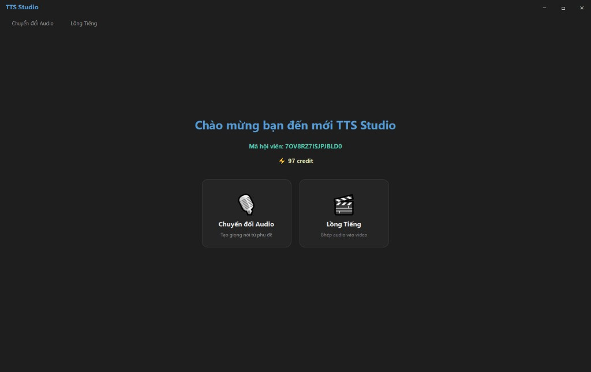
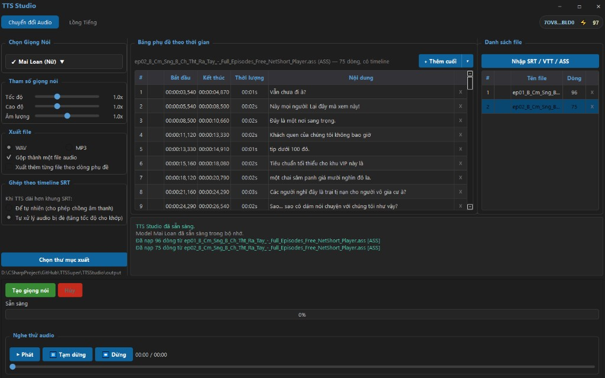
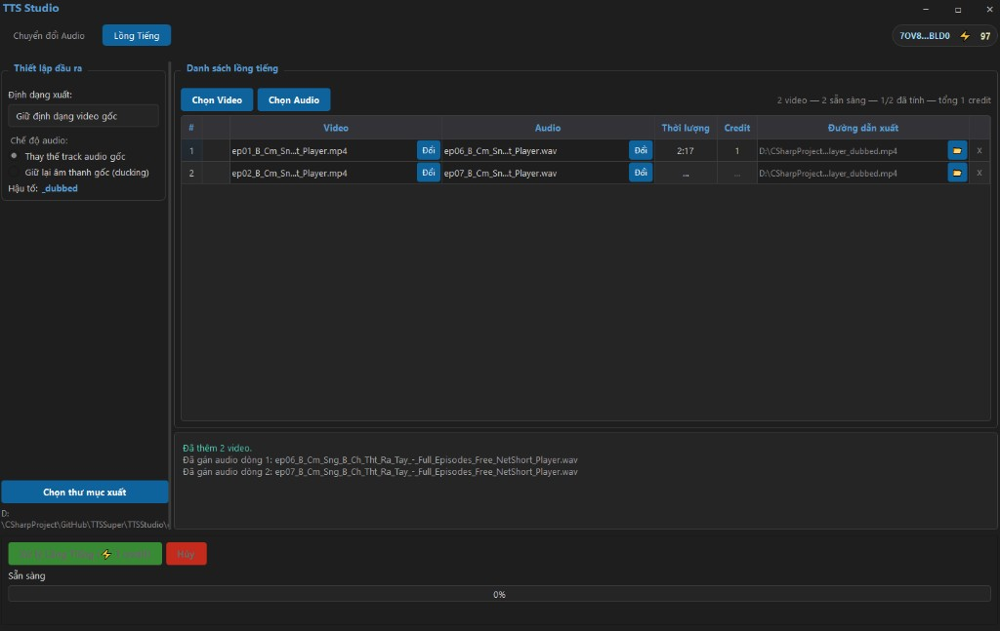

Đăng ký thiết bị
Lần đầu mở app nhận mã hội viên và credit khởi tạo. Dùng lại máy không cần đăng ký lại.
Tổng hợp giọng từ phụ đề, lồng tiếng hàng loạt, báo giá credit rõ ràng và thanh toán QR ngay trong phần mềm — không cần mở trình duyệt.

Giao diện tối, tập trung workflow: từ phụ đề → audio → ghép video, không rời khỏi TTS Studio.
Chọn giọng, chỉnh tốc độ / cao độ / âm lượng, xuất WAV hoặc MP3. Ghép theo timeline SRT với chế độ overlap hoặc fit slot.

Gán video + audio từng dòng, báo giá credit theo thời lượng, xử lý nhiều file. Thay thế track gốc hoặc ducking âm thanh nền.

Lần đầu mở app nhận mã hội viên và credit khởi tạo. Dùng lại máy không cần đăng ký lại.
TTS từ phụ đề hoặc gán audio có sẵn, quote credit trước mỗi lần xử lý dubbing.
Chọn gói, quét VietQR, credit cộng vào ví. Chi tiết →
Phí lồng tiếng tính theo thời lượng âm thanh/video. Giá gói credit chính xác hiển thị trong app khi mua.
TTS Studio chạy trên Windows. Tải, cài đặt và làm theo hướng dẫn bắt đầu — chỉ vài phút.